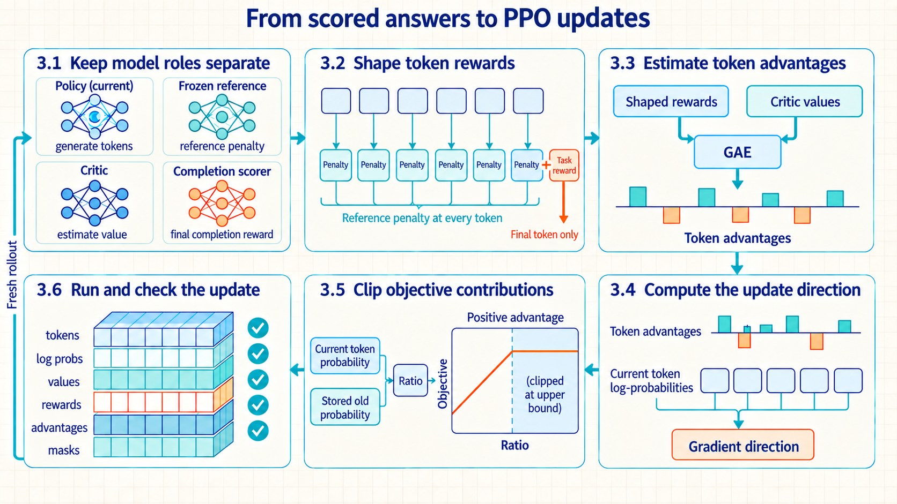
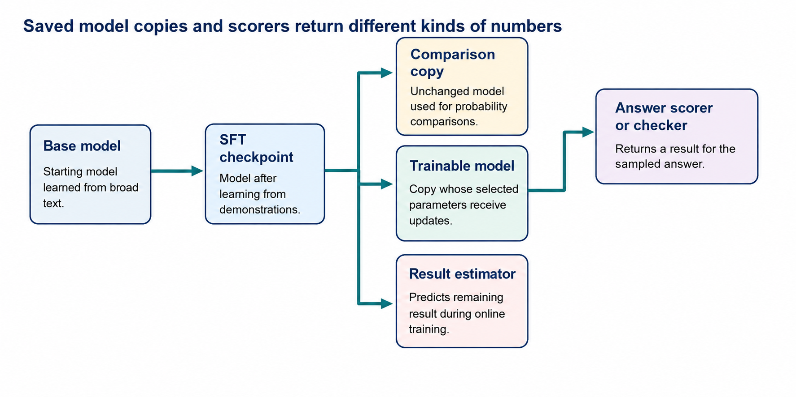
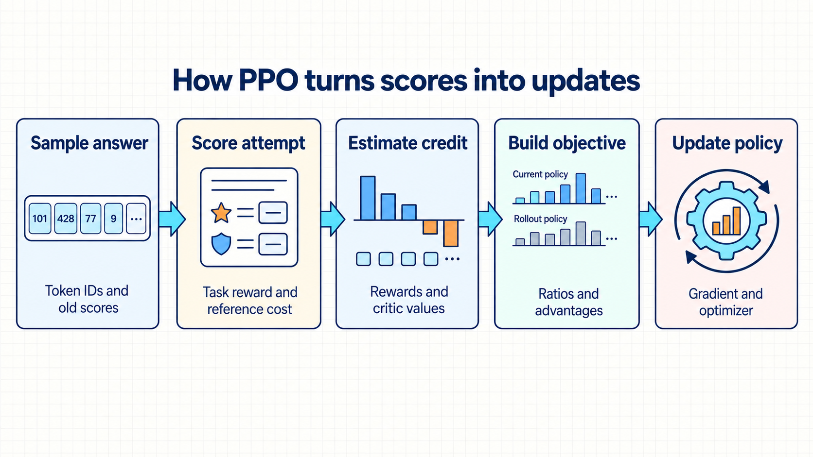

3 PPO for scored attempts
Scored answers can improve a policy without being organized into preference pairs. Reusing those answers saves generation work, but training must account for the policy changes made since they were sampled.
The fixed-data DPO workflow learns from recorded chosen/rejected pairs. Suppose the current model generates a promising answer that is absent from those pairs. A scorer can assign that answer a number, but DPO needs a comparison with another answer before it can use the new evidence. Proximal Policy Optimization (PPO) is a policy-update method that can learn from scores for newly sampled actions. In the InstructGPT training pipeline, it uses a learned scorer’s assessment of each generated answer without first constructing a chosen/rejected pair.1
Generating and scoring new answers costs time. PPO therefore saves a batch of answers and the probabilities that generated them, then uses that batch for several updates. Each update can change how likely the model is to produce the same tokens. Reusing the batch creates a practical problem: the saved answers become less representative as the model changes. To reduce overreaction to that batch, PPO stops giving extra objective benefit to certain large changes in the saved tokens’ probabilities.2
The score is also imperfect. In Gao and colleagues’ experiment, optimizing a learned scorer far enough eventually reduced the score from a separate, stronger scoring model. That result concerns their synthetic setup, but it illustrates why a better training score need not mean a better answer.3 The LLM training setup below therefore keeps the task score separate from a cost for departing from the frozen SFT reference, and checks the resulting model independently.4
One saved answer connects the calculations: identify the model outputs, turn the score and reference comparison into rewards, estimate which token choices helped, and use those estimates to change the policy. The same tokens remain visible from the first model pass to the final update.

Read clockwise from Section 3.1. The map follows the saved answer through model scoring, reward calculation and a parameter update. The Section 3.5 sketch shows only the case where a token’s estimated contribution is positive. That section also explains the negative case. After the saved batch has been reused, the updated policy generates a fresh batch.
3.1 Keeping PPO model roles separate
PPO begins with one newly generated and scored response. The trainer must retain the decisions that produced it so later calculations refer to the same answer. A rollout is this recorded sequence of states, sampled actions and received rewards. For an LLM answering one prompt, it follows generation from the prompt through the final response token. PPO also stores the probabilities used to sample those tokens, so an update can compare the old and current probabilities for the same decisions.
For a prompt with \(L\) tokens and a response with \(T\) tokens, the initial state \(s_0\) is the \(L\)-token prompt. Choosing response token \(a_0\) appends that token and produces \(s_1\). After \(T\) decisions, the terminal state contains the complete answer. The policy emits one vocabulary-sized logit vector at each state, and a sampling rule selects the realized action.
The token trace maps to four reinforcement-learning objects.
State: The information available before the next decision: prompt tokens, earlier generated tokens, and, for an agent, returned tool observations or other environment history.
Action: The choice made by the policy. At the lowest level it is the next generated token. At a higher level, several generated tokens can encode a completion, tool request, or stop decision.
Reward: A scalar feedback signal returned after an action or sequence. It may come from a person, a learned scorer, or a deterministic verifier.
Policy: The decision rule \(\pi_\theta(a_t\mid s_t)\) that assigns a probability to each possible next action from the current state.
The generic loop is state \(\rightarrow\) policy \(\rightarrow\) action \(\rightarrow\) environment result \(\rightarrow\) next state. Unlike supervised next-token training, the learning signal can arrive after a sequence of sampled decisions rather than as a target token at every position.

Human preference, a learned reward model, or a verifier can supply the result signal. The system samples actions, records the state/action path, scores the result, and converts that score into a training signal for the policy.
One retained rollout contains five aligned objects.
Prompt token IDs \(x\) (length \(L\)): The conditioning context reused for every response-token prediction.
Response token IDs \(a_0\) through \(a_{T-1}\) (length \(T\)): The sampled actions whose policy probabilities are gathered during training.
Policy logits \(z_t\) (vector of length \(|V|\)): The raw score vector at each response position. \(|V|\) is the number of token types in the vocabulary.
Selected log probability \(\log \pi_\theta(a_t\mid s_t)\) (scalar): The stored rollout-policy value later compared with the current probability for the same token and state.
Completion score \(R_{\mathrm{task}}\) (scalar): The evaluator result returned after the full response and later converted into token-aligned rewards.
A PPO update reuses the same stored response across four model roles. Sharing one trace keeps every returned probability, score, and value aligned to the decisions that produced the answer.
The score for a complete answer arrives after many token choices. To assess an earlier choice, training needs the rewards that follow it, not just any reward received immediately. Return is the sum of those future rewards, with later rewards optionally reduced by a discount factor. In this PPO setup, the rewards include both the task score and the reference-policy cost. Section 3.2 shows how those components form the token reward sequence.
The value model predicts that return before the next token is chosen. Its prediction provides a baseline, a comparison value determined by the current state rather than the particular next action. An advantage compares the expected return after an action with that baseline. The trainer must estimate it from the recorded rewards and value predictions. A positive estimate favors the sampled action relative to the baseline. It does not establish that the answer is objectively correct.
In the running repair case, the policy generates a diagnosis and patch, the reward model or test runner scores whether it passes, the reference measures change from SFT behavior, and the value head predicts the remaining return at each response token. That return includes the task reward and reference cost, combined in Section 3.2. All four roles evaluate the same sampled response rather than producing unrelated numbers.
Policy \(\pi_\theta\): The trainable LLM decision rule defined in Chapter 1. At every prompt/prefix it returns a next-token distribution. PPO samples from that distribution, stores the selected-token log-probabilities, and updates \(\theta\).
Reference \(\pi_{\mathrm{ref}}\): The frozen SFT copy of that decision rule. It scores the same prefixes and selected tokens to measure KL divergence from SFT behavior, but its weights do not receive the PPO update.
Reward model \(r_\psi\): Maps a completed prompt/response pair to a scalar score. The parameter symbol \(\psi\) distinguishes this scorer from the critic.
Value model \(V_\phi\): Maps a prompt/prefix to the expected discounted sum of future token rewards under the rollout policy. Those rewards include the task score and reference cost. It predicts return, not the next reward alone, and supplies the baseline used to build advantages.5

The checkpoint lineage in the figure explains where the frozen and trainable copies come from. For the same sampled answer, the scorer returns a completion score and the value model returns token-state values.
- Behavior policy: The probability distribution that actually samples rollout tokens. If generation changes logits with temperature, token masking, top-k, top-p, or another processor, \(\pi_\theta\) denotes the distribution after those transformations. Store old probabilities from that same distribution and reproduce the corresponding transformation when re-scoring. Otherwise the current-to-old ratio compares different policy definitions.
These roles determine which calculations are needed, but not how many complete LLMs must occupy GPU memory. The course implementation attaches a value head to the policy. A larger system may use a separate critic, and a test runner may replace a learned reward model. DPO can precompute frozen-reference scores for saved pairs. With adapters, the policy and reference may share base weights if the reference still represents the intended SFT checkpoint. Each choice changes the memory budget without changing the meaning of a policy probability or a reward.
Example: weights are only part of a PPO memory budget
A hardware plan proposes four separate, dense 7-billion-parameter models: policy, reference, reward model, and critic. Only the policy and critic are trained. Can 56 GB of GPU memory hold this training setup?
Inputs and storage assumptions
The parameter count comes from the proposed model configurations. For this illustrative budget, every weight and stored gradient uses two bytes. Adam keeps running estimates of the gradient and squared gradient, each stored in four bytes per trainable parameter. The optimizer also updates a four-byte master copy of each trainable weight, then converts it to the two-byte weight used by the model. These are explicit storage choices, not requirements of PPO. GB below means one billion bytes. Frozen models have no gradients or optimizer state.
Calculation
- Model weights: One copy needs \(7\times10^9\times2=14\times10^9\) bytes, or 14 GB. Four copies need \(4\times14=56\) GB.
- Gradients: The two trainable copies need another \(2\times14=28\) GB.
- Adam moment estimates: Two four-byte estimates for each trainable parameter need \(2\times7\times10^9\times8=112\times10^9\) bytes, or 112 GB.
- Master weights: Four bytes for each trainable parameter add \(2\times7\times10^9\times4=56\times10^9\) bytes, or 56 GB.
- Subtotal: \(56+28+112+56=252\) GB before temporary forward-pass values, generation cache, and software buffers.
Conclusion: The proposed 56 GB covers only weights in this four-copy arrangement. It cannot hold its full training state. The policy with a value head and the adapter options described above require different budgets. Recalculate from the tensors the implementation actually stores, then measure its peak use during generation and optimization separately.
Temporary training and generation values have different lifetimes. Activations are intermediate forward-pass values needed for gradients. Activation checkpointing saves fewer of them and repeats some computation during the backward pass. A key-value (KV) cache stores earlier attention keys and values so generation can extend an answer without recomputing them at every token. Its size grows with the number and length of answers being generated together. It need not remain on the GPU while the optimizer processes their saved token IDs. TRL’s versioned memory guide describes these memory-versus-compute choices.6
On several GPUs, placement adds another choice. Sharding splits a model’s weights or training state across devices, which must communicate during computation. Separate GPU groups can also divide the jobs: one generates answers, another scores them, and another trains the policy. The generation workers then need updated policy weights before the next rollout. HybridFlow represents these RLHF operations as distributed dataflow and changes actor placement between training and generation, providing one established example of the placement and transfer problem.7 Compare peak memory and elapsed time for each phase, including transfers.
3.2 Combining task reward with a KL penalty
The rollout contains one evaluator score for the complete answer and one stored probability for each sampled token. Advantage estimation needs a reward aligned to every token state and a separate cost for movement away from the unchanged SFT reference. Place the answer score on the terminal token, calculate the sampled reference cost at each token, and keep the raw score and cost visible as separate components.
- Shaped token reward: A training reward constructed for each sampled token from the task score and any added costs or bonuses. It is calculated after the answer is scored. It is not a claim that the external scorer judged every intermediate token.
The explicit PyTorch PPO implementation places the terminal task score \(R_{\mathrm{task}}\) on the final generated token and subtracts a sampled log-ratio penalty formed from fixed rollout-policy and reference-policy log probabilities.8
For the same sampled token sequence, run the frozen reference model without gradients and gather its log probability at each selected token. A reward model or verifier scores the completed text once to produce \(R_{\mathrm{task}}\). build_rewards places that terminal number at the final token and combines it with the two gathered log-probability tensors, so every \(r_t\) is constructed from stored rollout data and explicit model outputs.
\[ r_t = -\beta_{\mathrm{KL}}\left(\log \pi_{\mathrm{old}}(a_t \mid s_t) - \log \pi_{\mathrm{ref}}(a_t \mid s_t)\right) + \mathbf{1}[t=T-1]R_{\mathrm{task}} \tag{3.1}\]
Variables
- \(r_t\): Constructed training reward at token \(t\).
- \(\beta_{\mathrm{KL}}\): Coefficient converting a sampled policy-to-reference log-ratio into a reward penalty.
- \(\pi_{\mathrm{old}}\) and \(\pi_{\mathrm{ref}}\): Fixed rollout and frozen reference policies used while rewards are constructed.
- \(a_t\) and \(s_t\): Sampled token and its state.
- \(R_{\mathrm{task}}\): Completion-level evaluator score.
- Final-token indicator: One at zero-based position \(t=T-1\) and zero at earlier response positions.
Mechanism: Subtract reference log-probability from rollout log-probability for the sampled token, multiply that log-ratio by \(\beta_{\mathrm{KL}}\), subtract the result, and attach \(R_{\mathrm{task}}\) only at the final token. Interpretation: Convert one completion score and one sampled policy-to-reference penalty per token into a token-aligned reward sequence. The scorer did not evaluate every token separately. Scale: The sampled log-ratio is reported in nats. \(\beta_{\mathrm{KL}}\) converts that shift into the same task-score scale as \(R_{\mathrm{task}}\) so the terms can be combined.
One sampled log-ratio can be negative and is not itself a KL divergence. At a fixed token state, its expectation over actions sampled from the rollout policy equals the forward KL divergence. Averaging sampled ratios over the states visited by rollouts estimates a rollout-state-weighted mean token KL.
Do not conflate the KL training penalty with a KL diagnostic. The rollout-time old and reference log probabilities in Equation 3.1 are fixed numbers. They change the shaped rewards, which change the GAE advantages used as fixed actor weights. The actor gradient then flows only through the current-policy log probabilities. It does not differentiate through \(\pi_{\mathrm{old}}\), \(\pi_{\mathrm{ref}}\), the reward construction, or GAE. Compute those fixed tensors under torch.no_grad() as in Code 3.1, or detach them before reuse. When the actor loss is built in Sections 3.4 and 3.5, its current-policy log probabilities must retain their gradient path. A reported KL metric only measures drift for monitoring. It affects the update only if the configured objective feeds it back into the reward or loss. \(\beta_{\mathrm{DPO}}\) scales an offline preference margin, whereas \(\beta_{\mathrm{KL}}\) prices online reference drift on the task-score scale.
The continuous fixture used through Sections 3.2 to 3.5 is a hand-checkable four-token response, not a saved model run. Its mock tokenizer assigns IDs 101, 102, 103, and 2 to the displayed tokens. A rollout-policy forward pass supplies old_lp, a frozen-reference forward pass supplies ref_lp, and a critic forward pass supplies \(V(s_t)\). A later actor evaluation supplies current_lp. For this fixture, those numeric model outputs are declared illustrative assumptions rather than observed checkpoint values. The verifier gives the completed answer a terminal task reward of 1.0. The configuration sets \(\beta_{\mathrm{KL}}=0.20\), \(\gamma=1.0\), \(\lambda=0.95\), and clip width \(\epsilon=0.20\). The final-token terminal flag makes \(V(s_4)=0\).
| t | Token and mock ID | old_lp |
ref_lp |
\(V(s_t)\) | current_lp |
Terminal |
|---|---|---|---|---|---|---|
| 0 | Add (101) |
-0.800000 | -0.900000 | 1.00 | -1.156675 | no |
| 1 | null (102) |
-1.000000 | -0.800000 | 0.90 | -1.000000 | no |
| 2 | check (103) |
-0.600000 | -0.700000 | 0.30 | -0.504690 | no |
| 3 | <eos> (2) |
-1.200000 | -1.000000 | 0.10 | -0.899895 | yes |
Every probability column contains the selected token’s natural log probability, not a full logit vector. The current values are chosen illustrative update values: they make the ratios \([0.70,1.00,1.10,1.35]\) so the same fixture exercises both clipping branches later. All reward, residual, advantage, and return values below are derived from these stated inputs.
Independent scale check: KL coefficient sets the reward penalty
For one sampled token, the rollout-minus-reference log-probability is 0.80 nats. The example compares a small and a large KL coefficient.
Inputs and measurement
Use the rollout-time log probability stored for the sampled token and gather the frozen reference probability for that same token and state. Their difference is 0.80 here. The two \(\beta_{\mathrm{KL}}\) values, 0.02 and 0.20, are deliberately chosen configuration settings for a reward-scale comparison.
Scale: \(\beta_{\mathrm{KL}}\) is the reward penalty per nat. Changing it from 0.02 to 0.20 makes the same policy shift cost ten times as much reward.
Calculation
\[0.02\times0.80=0.016,\qquad 0.20\times0.80=0.160\]
Interpretation: Increasing \(\beta_{\mathrm{KL}}\) from 0.02 to 0.20 makes the same 0.80-nat sampled log-ratio cost ten times more reward. It must therefore be calibrated to the reward scale rather than copied unchanged between tasks.
The PPO actor ultimately uses advantages derived from this shaped return, not from the raw evaluator score alone. Report \(R_{\mathrm{task}}\) and the reference-policy cost separately so an apparent improvement cannot be caused only by changing the regularization term.
3.3 Estimating token credit with GAE
The four-token fixture now has a shaped reward at each token and a value-model prediction for each token state. PPO still needs one advantage per token that connects later results to earlier decisions without assigning the full, noisy final score to every earlier token. One backward calculation will carry the same fixture from rewards through residuals, advantages, and return targets.
Generalized Advantage Estimation (GAE): A calculation that combines token rewards and consecutive value predictions into one advantage for each token. It controls how much later evidence influences an earlier decision.
Bias and variance in an advantage estimate: Bias is a systematic tendency to miss the true expected advantage; variance is how much the estimate changes across different sampled rollouts. Relying more on the critic can add bias when its predictions are wrong but usually lowers rollout-to-rollout variation. Carrying more observed future reward backward can reduce that critic bias but usually raises variation.
A one-step temporal-difference residual is the difference between what was observed after one transition and what the value model predicted before it. GAE combines those residuals across time. Both \(\gamma\) and \(\lambda\) lie in \([0,1]\) and are configuration values, not model outputs. Setting \(\lambda=0\) keeps only the one-step residual; setting \(\lambda=1\) carries the full discounted chain of later residuals, and with \(\gamma=1\) and a true terminal end, it becomes the sum of remaining rewards minus the current-state baseline \(V_\phi(s_t)\). This gives PPO a separate learning signal for each response token when the final result is sparse, but it does not create the reward, validate the verifier, or constrain the policy update.9
Its numeric inputs come from two aligned computations on the stored rollout: build_rewards supplies \(r_t\) after adding terminal reward and the sampled log-ratio penalty, while the critic forward pass supplies \(V_\phi(s_t)\) and \(V_\phi(s_{t+1})\) at consecutive response positions. GAE then performs only arithmetic on those tensors; it does not query the reward model or generate a new completion at each token.
A one-step GAE residual measures the surprise of a token transition relative to the critic’s prediction.
\[ \delta_t = r_t + \gamma V_{\phi}(s_{t+1}) - V_{\phi}(s_t) \tag{3.2}\]
Variables
- \(\delta_t\): Temporal-difference residual at token \(t\).
- \(r_t\): Observed shaped token reward.
- \(\gamma\in[0,1]\): Reward-discount factor; smaller values reduce the weight of later rewards.
- \(V_\phi\): Critic with parameters \(\phi\).
- \(s_t\) and \(s_{t+1}\): Consecutive token states.
Mechanism: Add immediate reward to the discounted next-state prediction, then subtract what the critic predicted before the action. Interpretation: Measure how surprising one transition was relative to the critic, producing a local correction signal. Scale: The critic prediction and observed reward must use the same return scale so their subtraction is meaningful; \(\delta_t\) remains on that scale.
The full GAE expression combines one-step residuals across later positions, allowing PPO to assign an earlier response token credit for outcome evidence that arrives later in the completion.
\[ \hat{A}_t^{\mathrm{GAE}} = \sum_{l=0}^{T-t-1}(\gamma\lambda)^l\left[r_{t+l}+\gamma V_{\phi}(s_{t+l+1})-V_{\phi}(s_{t+l})\right] \tag{3.3}\]
Variables
- \(\hat{A}^{\mathrm{GAE}}_t\): Estimated advantage used by PPO at token \(t\).
- \(l\): Number of transitions into the future.
- \(T\): Number of sampled response-token decisions, indexed from 0 to \(T-1\).
- \(\lambda\in[0,1]\): Weight controlling how much later evidence is retained; zero gives a one-step estimate and one keeps the full discounted residual chain.
- \(\gamma\in[0,1]\): Future-reward discount, with smaller values reducing the influence of later residuals.
- \(r\) and \(V_\phi\): Transition reward and critic return prediction.
Mechanism: Each bracket is one temporal-difference residual. The product \(\gamma\lambda\) is raised to the future-step offset \(l\), so more distant residuals receive less weight. The finite sum stops at the terminal transition, whose next-state value is zero unless a nonterminal cutoff is explicitly bootstrapped. Interpretation: Aggregate future critic corrections into one advantage for an earlier token.
Continuous fixture: shaped rewards, TD residuals, GAE, and returns
The verifier score 1.0 is attached only at \(t=3\). With \(\beta_{\mathrm{KL}}=0.20\), each earlier reward is only the negative sampled reference cost. For example, \(r_0=-0.20[-0.80-(-0.90)]=-0.02\), while \(r_3=-0.20[-1.20-(-1.00)]+1.0=1.04\).
The critic values in the stored-input table are model outputs at \(s_0\) through \(s_3\). The terminal flag supplies \(V(s_4)=0\). With configured \(\gamma=1\), Equation 3.2 gives \(\delta_0=-0.02+0.90-1.00=-0.12\) and \(\delta_3=1.04+0-0.10=0.94\). The middle residuals follow the same subtraction.
Starting from \(\hat A_4=0\), the equivalent backward form of Equation 3.3 is \(\hat A_t=\delta_t+\gamma\lambda\hat A_{t+1}\). The final two steps are \(\hat A_3=0.94\) and \(\hat A_2=-0.22+0.95(0.94)=0.673\). Continuing backward produces both a small negative advantage at the first token and positive advantages later.
| t | \(r_t\) | \(\delta_t\) | \(\hat A_t\) | \(R_t^{\mathrm{target}}\) |
|---|---|---|---|---|
| 0 | -0.020000 | -0.120000 | -0.0446175 | 0.9553825 |
| 1 | 0.040000 | -0.560000 | 0.0793500 | 0.9793500 |
| 2 | -0.020000 | -0.220000 | 0.6730000 | 0.9730000 |
| 3 | 1.040000 | 0.940000 | 0.9400000 | 1.0400000 |
Each return target is \(R_t^{\mathrm{target}}=\hat A_t+V(s_t)\). For example, the first target is \(-0.0446175+1.00=0.9553825\), and the terminal target is \(0.94+0.10=1.04\). Thus every row can be checked from the stored inputs without another model call.
Interpretation: The first action receives a small negative advantage because its immediate reference cost and the critic’s drop outweigh the decayed later residuals. The terminal action receives a positive advantage because the realized shaped result was much better than its 0.10 prediction.
The critic is trained against return targets built from the same shaped reward sequence. Its value head predicts expected discounted future shaped reward, and a squared error moves that prediction toward the calculated target.
\[ L_V = \frac{1}{2}\,E_t\left[\left(V_{\phi}(s_t)-R_t^{\mathrm{target}}\right)^2\right] \tag{3.4}\]
Variables
- \(L_V\): Value-model loss.
- \(V_\phi(s_t)\): Critic prediction of discounted future shaped return at token state \(s_t\).
- \(R_t^{\mathrm{target}}\): Return target computed from observed token rewards and, for a nonterminal cutoff, a later value estimate.
- Expectation over \(t\): Average across stored rollout token states.
Mechanism: Subtract prediction from target, square the error, multiply by one half, and average. Using a later value estimate inside the target is bootstrapping. Interpretation: Teach the critic to predict the return scale used for advantage estimation; the critic does not judge factual correctness. Scale: Squaring the critic error also squares the reward scale, so this loss changes quadratically when rewards are rescaled.
For the same fixture, the first state contributes \(\tfrac12[1.00-0.9553825]^2\approx0.000995\) to the unaveraged value loss. Gradient descent moves the critic toward the calculated shaped-return target. At the true terminal boundary, \(V(s_4)=0\). If collection had stopped at a nonterminal cutoff, the recorded truncation convention would instead retain the valid next-state value for bootstrapping.
3.4 Turning token credit into a gradient
Reward shaping and GAE have converted one scored answer into an estimated advantage for each sampled token. Those fixed rollout values must now become a direction for changing the trainable policy parameters. The raw task objective states what behavior should improve, while the shaped return and finite-batch policy-gradient estimate determine the direction actually used by the actor update.
- Expected task return: The average raw evaluator score obtained when prompts are drawn from the training task distribution and completions are sampled from the current policy. It describes task performance before the reference-policy cost is added.
Let \(x\) be a prompt drawn from task distribution \(D\). Given that prompt, the policy \(\pi_\theta\) samples completion \(y\) and the evaluator returns \(R_{\mathrm{task}}(x,y)\). The nested expectations show both sampling steps explicitly.
\[ J_{\mathrm{task}}(\theta) = \mathbb{E}_{x∼D}\left[\mathbb{E}_{y∼\pi_{\theta}(\cdot\mid x)}\left[R_{\mathrm{task}}(x,y)\right]\right] \tag{3.5}\]
Variables
- \(J_{\mathrm{task}}(\theta)\): Expected raw task-score objective for policy parameter setting \(\theta\).
- \(\theta\): Trainable policy parameters.
- \(x \sim D\): Prompt drawn from task distribution \(D\).
- \(y \sim \pi_\theta(\cdot\mid x)\): Completion sampled conditionally from the current policy.
- \(R_{\mathrm{task}}(x,y)\): Raw evaluator score for that prompt and completion.
Mechanism: The inner expectation averages completion scores for one prompt; the outer expectation averages those prompt-level values across D. Interpretation: Measure the raw score of current-policy behavior. PPO does not optimize this quantity alone: it constructs shaped token rewards and advantages, then optimizes a clipped surrogate for that regularized return.
\(J_{\mathrm{task}}(\theta)\) is one scalar, not a parameter update. The gradient operator \(\nabla_\theta\), read as “differentiate with respect to \(\theta\),” produces one local slope for every trainable parameter.
A gradient vector has the same shape as \(\theta\). In the next equation, \(J\) means any objective that is being maximized. Scaling \(\nabla_\theta J(\theta)\) by the learning rate and adding it to \(\theta\) gives an ascent step. PyTorch usually obtains the same direction by minimizing \(-J\). Later, PPO will substitute its clipped surrogate \(J_{\mathrm{PPO}}\) for this generic \(J\); it does not update directly from the raw task-score objective above.
\[ \theta ← \theta + \alpha\,∇_{\theta}J(\theta) \tag{3.6}\]
Variables
- \(J(\theta)\): Generic scalar objective to maximize; for the PPO actor update this becomes \(J_{\mathrm{PPO}}\).
- \(\theta\): Full trainable policy-parameter vector.
- \(\alpha\): Positive learning rate.
- \(\nabla_\theta J(\theta)\): Gradient vector produced by differentiating \(J\) with respect to \(\theta\).
Mechanism: Scale the gradient vector by \(\alpha\) and replace \(\theta\) with the old value plus that step. Interpretation: Move parameters uphill for a maximized objective. A minimization optimizer applies the negative objective instead.
- REINFORCE: The basic sampled policy-gradient estimator. It raises the log probability of sampled actions whose results are better than a comparison value and lowers it for actions whose results are worse.10
The answer is a sequence of discrete token IDs, so there is no useful derivative of the act of choosing one ID. What can change smoothly is the probability the model assigns to that same recorded answer. This distinction lets a score influence training without differentiating through sampling or through the evaluator.
From answer scores to a sampled gradient. Hold one prompt \(x\) fixed and write \(p_\theta(y)=\pi_\theta(y\mid x)\) for the probability of completion \(y\). Let \(R(y)\) be its evaluator score, independent of the policy parameters when that text is fixed. For differentiable positive probabilities, the log-derivative identity is
\[\nabla_\theta p_\theta(y)=p_\theta(y)\nabla_\theta\log p_\theta(y).\]
Substitute this identity when differentiating the expected score:
\[\begin{aligned} \nabla_\theta\sum_y p_\theta(y)R(y) &=\sum_y p_\theta(y)R(y)\nabla_\theta\log p_\theta(y)\\ &=\mathbb{E}_{y\sim p_\theta}\!\left[R(y)\nabla_\theta\log p_\theta(y)\right]. \end{aligned}\]
The first expression averages over all possible answers. The last expression can be estimated by sampling answers, recording their scores, and differentiating their log probabilities. The model is evaluated again on the saved token IDs; those IDs and scores are fixed inputs to that derivative. Since an answer’s log probability is the sum of its token log probabilities, the derivative also separates into token contributions.
From return to advantage. A high score alone does not show whether an action was better than the policy’s usual choices in the same state. Subtract the state-dependent baseline introduced in Section 3.1. If that baseline does not depend on the selected action, its expected contribution to the gradient is zero:
\[\sum_a\pi_\theta(a\mid s)\nabla_\theta\log\pi_\theta(a\mid s) =\nabla_\theta\sum_a\pi_\theta(a\mid s) =\nabla_\theta 1=0.\]
Here \(s\) is the fixed state and the sum covers its possible next actions \(a\). Multiplying this zero by a fixed baseline leaves zero. Subtracting the baseline therefore preserves the expected gradient while potentially reducing sampling noise. A learned baseline still has to be treated as fixed in the actor calculation. GAE supplies the token-level estimates \(\hat A_t\) used in place of exact advantages. Its estimation error and bias remain relevant.11
What receives a gradient. During this actor step, the sampled actions, old-policy probabilities, reference probabilities, rewards and advantage estimates are constants. Only current-policy log probabilities are differentiated. A positive advantage weights the contribution toward increasing the sampled action’s log probability. A negative advantage reverses that contribution. Because the model shares parameters across tokens and examples, the combined update need not move every individual probability in its favored direction.
For a batch of \(B\) rollouts collected by the current policy, the finite estimate below sums those advantage-weighted contributions. It describes the on-policy starting point. Once the policy changes and the same batch is reused, Section 3.5 adds the current-to-old ratio and clipping.
\[ \hat{g} = \frac{1}{B}\sum_{b=1}^{B}\sum_t ∇_{\theta}\log\pi_{\theta}\left(a_t^b\mid s_t^b\right)\hat{A}_t^b \tag{3.7}\]
Variables
- \(\hat{g}\): Finite-batch estimate of the policy-gradient direction.
- \(B\): Number of sampled rollouts in the batch.
- \(s_t^b\) and \(a_t^b\): State and sampled action at token \(t\) in rollout \(b\).
- \(\pi_\theta\): Current trainable policy.
- \(\hat{A}_t^b\): Fixed estimated advantage for that sampled token.
Mechanism: Differentiate each sampled action’s current log probability, multiply by its fixed estimated advantage, sum over tokens and rollouts, and divide by B. Interpretation: Estimate the actor update direction: positive advantages raise sampled-action probability and negative advantages lower it. Rescaling all shaped rewards also rescales the estimate.
Example: an advantage changes one trainable probability
Consider a deliberately small policy with two possible next actions, \(a\) and \(b\). One trainable logit \(q\) controls them: \(\pi_q(a)=\sigma(q)\) and \(\pi_q(b)=1-\sigma(q)\), where \(\sigma\) is the sigmoid used in Chapter 2. This is a training calculation for one saved action, not a claim about a measured LLM run. It isolates the gradient before PPO’s batch-reuse correction.
Inputs. The current probability of \(a\) is 0.40, so \(q=\log(0.40/0.60)\approx-0.4055\). The saved sampled action is \(a\). A reward-and-baseline calculation supplies the illustrative fixed advantage \(\hat A=0.60\), and the configured learning rate is \(\alpha=0.10\).
Calculation. For this one-parameter policy, differentiating the selected action’s log probability gives \(\partial\log\pi_q(a)/\partial q=1-\pi_q(a)=0.60\). Multiplication by the fixed advantage gives a gradient contribution of \(0.60\times0.60=0.36\). An ascent step produces
\[q_{\mathrm{new}}=q+\alpha\hat A\frac{\partial\log\pi_q(a)}{\partial q} \approx-0.4055+0.10(0.36)=-0.3695.\]
Evaluating the sigmoid again gives \(\pi_{q_{\mathrm{new}}}(a)\approx0.4087\). If the fixed advantage had been \(-0.60\) instead, the step would give \(q_{\mathrm{new}}\approx-0.4415\) and probability \(0.3914\).
Conclusion. The saved action and advantage do not change during differentiation. The trainable logit changes, and its new value produces a new probability. In an LLM, automatic differentiation performs the same kind of calculation through many shared parameters and sums contributions from many tokens, so this isolated direction is not a guarantee for every token after the combined update.
For the current-to-old ratio defined in Section 3.5, matching scoring conditions give a first-evaluation value of one. In exact arithmetic, this holds when the current actor has the same weights and model state as the rollout actor, the same tokenizer and prompt template reconstruct the same states, the same sampling transformations define the probabilities, and both paths assign the same log probability to each selected token. A changed checkpoint, stale asynchronous worker, or mismatched computation breaks that condition before the first optimizer step. After the policy changes and the batch is reused, PPO replaces the ordinary on-policy expression with the ratio-weighted clipped surrogate in Section 3.5.
3.5 Limiting reused-batch updates with PPO clipping
The actor now has fixed advantages for tokens sampled by the rollout policy, but the trainable policy may already have changed while the batch is reused. A current-to-old selected-token ratio measures that local change on the stored states. Calculate the ratio, form the clipped surrogate, and inspect how positive and negative advantages use its bounds.
On-policy rollout: An answer sampled by the policy that is current when the batch is collected. PPO then reuses that batch briefly. After an update, the stored tokens were sampled by an older policy. The ratio below accounts for the change in selected-token probabilities.
Importance sampling in PPO: The current-to-old selected-token ratio is a local surrogate correction on states visited by the rollout policy. It does not exactly correct every change in the trajectory-state distribution, which is one reason batches are kept recent and policy movement is monitored.
The ratio calculation has two stages.
Store rollout probabilities: Freeze the rollout copy as \(\pi_{\mathrm{old}}\), sample one response-token sequence, and retain the old log probability of every selected token after the rollout sampling transformations.
Re-score the same tokens: During an update, teacher-force the stored sequence through the current policy, apply the corresponding policy transformations, gather the same token IDs, and exponentiate current minus old log probability. The ratio never compares two unrelated answers.
\[ \rho_t(\theta) = \frac{\pi_{\theta}(a_t\mid s_t)}{\pi_{\mathrm{old}}(a_t\mid s_t)} \tag{3.8}\]
Variables
- \(\rho_t(\theta)\): Current-to-old ratio for sampled token \(t\).
- \(\pi_\theta\): Current trainable-policy probability in the numerator.
- \(\pi_{\mathrm{old}}\): Stored rollout-policy probability in the denominator.
- \(a_t\) and \(s_t\): The same sampled token and stored state in both evaluations.
Mechanism: Divide current probability by the probability stored when the rollout was sampled. Interpretation: Measure local change for the sampled token: 1 is unchanged, above 1 is more likely, and below 1 is less likely. Symbol \(\rho\) keeps this ratio distinct from shaped reward \(r_t\).
PPO may reuse one stored rollout for several optimization epochs. Each extra epoch saves generation cost but makes the current policy farther from the distribution that produced the batch. Monitor clip fraction, KL diagnostics, and held-out behavior for signs that one batch is being overfit.12
\[ J_{\mathrm{PPO}} = \mathbb{E}\left[\mathrm{min}\left(\rho_t\hat{A}_t,\mathrm{clip}(\rho_t,1-\epsilon,1+\epsilon)\hat{A}_t\right)\right] \tag{3.9}\]
Variables
- \(J_{\mathrm{PPO}}\): Clipped surrogate objective to maximize.
- \(\rho_t\): Current-to-old token probability ratio.
- \(\hat{A}_t\): Fixed estimated token advantage from GAE.
- \(\epsilon\): Configured ratio deviation around one.
Mechanism: Compare the ordinary advantage-weighted ratio with the clipped-ratio term; min keeps the more conservative sampled contribution and the expectation averages sampled tokens. Interpretation: Remove additional surrogate-objective benefit after a sampled ratio crosses the relevant bound. This does not clip the probability itself or guarantee that the updated policy stays inside the interval. Scale: The ratio reweights the advantage but does not change its scale, so reward rescaling also rescales this surrogate.
Clipping depends on the sign of the fixed advantage. For a positive advantage, crossing the upper ratio bound removes extra surrogate credit; for a negative advantage, crossing the lower bound removes extra credit from further suppression. The same four-token fixture contains both cases.
Continuous fixture: PPO clipping for both advantage signs
The later actor evaluation in the stored-input table gives current-to-old ratios \([0.70,1.00,1.10,1.35]\). These ratios come from exponentiating current_lp - old_lp. For example, \(\exp[-0.899895-(-1.20)]=1.35\). Keep the GAE advantages from the derived-values table fixed and use configured \(\epsilon=0.20\).
Inputs and measurement
At \(t=3\), the positive advantage is 0.94 and the ratio 1.35 crosses the upper bound. At \(t=0\), the negative advantage is \(-0.0446175\) and the ratio 0.70 crosses the lower bound. The middle two tokens remain inside or at the unchanged point.
Calculation
\[\begin{aligned} t=3:\quad &\min(1.35\times0.94,1.20\times0.94)=1.128,\\ t=0:\quad &\min(0.70\times(-0.0446175),0.80\times(-0.0446175))=-0.035694. \end{aligned}\]
| t | \(\hat A_t\) | \(\rho_t\) | \(\rho_t\hat A_t\) | Clipped term | Selected |
|---|---|---|---|---|---|
| 0 | -0.0446175 | 0.70 | -0.031232 | -0.035694 | -0.035694 |
| 1 | 0.0793500 | 1.00 | 0.079350 | 0.079350 | 0.079350 |
| 2 | 0.6730000 | 1.10 | 0.740300 | 0.740300 | 0.740300 |
| 3 | 0.9400000 | 1.35 | 1.269000 | 1.128000 | 1.128000 |
Interpretation: The positive term is limited from 1.269 to 1.128. For the negative term, the minimum selects \(-0.035694\) rather than \(-0.031232\). Lowering that sampled action’s ratio below 0.80 therefore gives no additional objective improvement. The ratios themselves remain 1.35 and 0.70. Averaging all four selected terms gives \(0.477989\) for this illustrative batch.
The course slide in the notation reference writes the same maximized objective with a different label. The sign-specific calculation above explains precisely which side becomes flat.
The trust-region guarantee belongs to TRPO’s constrained formulation, not to PPO’s clipped surrogate.13 Clipping cannot repair a bad reward model and does not impose a hard trust region. Shared parameters, later minibatches, and other loss terms may still move probabilities beyond the interval. Clip fraction and KL diagnostics reveal how often that is happening.14
3.6 Following a PPO update in PyTorch
One PPO update needs aligned ratios, clipped terms, token rewards, value predictions, and GAE advantages. Every value must refer to the same sampled response token. The high-level path below now has concrete arrays behind each arrow. The implementation trace then checks their tensor alignment.

Reward and reference statistics are inputs. Returns, advantages, the clipped objective, and its gradient are derived quantities. A diagnostic must test those boundaries rather than treating the final loss as an unexplained number.
The PPO implementation uses PyTorch tensors and local functions, making token alignment, old-policy statistics, and the reward sequence explicit. PPOTrainer or GRPOTrainer can manage trainer bookkeeping in a larger run, but PyTorch still calculates differentiation and optimizer steps, while project code still defines rewards, verifiers, and independent evaluation checks.1516
Its rollout function samples \(B\) continuations of \(T\) response tokens from one prompt, where \(B\) is the number of sampled sequences in the batch and \(T\) is the generated-token count per sequence. The policy and reference each produce a log-probability tensor with shape \((B,T)\), while the critic produces values at those same positions.
Code 3.1 is an abbreviated notebook excerpt, not a standalone program. It requires an initialized policy with a value head, a frozen reference model, an optimizer, the configuration object cfg, and the six helper functions called in the excerpt. Its inputs are token sequences and scalar completion scores. It produces aligned \((B,T)\) tensors for log probabilities, rewards, values, advantages, and returns. ppo_update then changes the policy parameters and returns a statistics record. A correct run must keep every tensor aligned to the same \(T\) sampled response tokens. The old-policy and reference scores, rewards, advantages, and return targets are fixed update inputs, so the excerpt calculates them without recording gradients. Gradients are created only when ppo_update re-scores the stored tokens under the trainable policy.
Code example 3.1: PPO rollout statistics produce the clipped update.
# Rollout statistics, KL shaping, GAE, and PPO update
seq, L, T, texts = rollout(cfg) # token ids: (B, L + T)
with torch.no_grad():
old_lp, old_V, _ = aligned_logps_values(
policy,
seq,
L,
T,
is_policy = True,
)
ref_lp, _, _ = aligned_logps_values(
ref,
seq,
L,
T,
is_policy = False,
)
# Sampled-token shift has shape (B, T).
kl_tok = old_lp - ref_lp
terminal_reward = reward_fn(texts) # completion score: (B,)
rew = build_rewards(terminal_reward, kl_tok, cfg.kl_coef)
adv, ret = compute_gae(rew, old_V, cfg.gamma, cfg.gae_lambda)
stats = ppo_update(
seq, L, T, old_lp, old_V, adv, ret, cfg, optimizer
)The alignment step matters: logits at one absolute position predict the next token, so aligned_logps_values must select the \(T\) response-token predictions rather than prompt tokens or one-token-shifted targets. The supplied notebook’s rollout function samples from temperature-scaled logits, while its aligned_logps_values helper scores unscaled logits. The recorded run is consistent because cfg.temperature is 1.0. For any other temperature, the helper must apply the same transformation during sampling, storage, and re-scoring, or the ratio would compare different behavior-policy definitions.
Run a first-step consistency check before trusting PPO statistics. With the optimizer still untouched, gather the rollout engine’s actual selected-token log probabilities and subtract them from trainer-side log probabilities for the same token IDs and reconstructed states. A difference of 0 should give ratio 1. Even a log-probability difference of 0.02 gives \(\exp(0.02)\approx1.0202\). Record maximum and percentile absolute differences, the implied ratios, and the token positions where they occur.
The following list is this guide’s engineering diagnostic, not a set of causes enumerated by the PPO paper. A nonzero result can come from different weights or buffers, tokenizer versions, chat templates, special-token placement, temperature, top-k, top-p, token masks, other sampling transformations, numerical precision, quantization, kernels, batching paths, or asynchronous workers using an older checkpoint. Compare weight version and token IDs first, then compare processed logits at the first differing position. Accelerated inference does not make a mismatch inevitable, and a small tolerance can reflect floating-point order rather than a different intended distribution.
The governing test follows from PPO’s denominator requirement: the stored probability must belong to the behavior distribution that sampled the token.17
Trainer re-scoring cannot reconstruct a behavior distribution that used different sampling transforms or stale weights. An importance ratio needs the denominator from the distribution that actually sampled the action. If the rollout system cannot return those selected-token probabilities, label any recomputed denominator and its matching assumptions explicitly rather than calling it the observed behavior probability.
The returned tensors have four distinct jobs.
Policy/reference statistics:
old_lpandref_lpsupply the gathered policy and reference log probabilities in the KL-shaped reward.Token rewards:
rewis the token reward sequence after terminal reward and the sampled log-ratio penalty are combined.Critic, return, and advantage:
old_Vis the critic value used by the temporal-difference residual,advis the resulting GAE advantage, andretis the return target used by the value loss.Policy update:
ppo_updateapplies the clipped surrogate to stored old-policy statistics. PyTorch owns tensors and automatic differentiation.AdamWis the configured optimizer that applies the resulting gradients, while notebook-local functions own the explicit PPO bookkeeping.
The supplied notebook includes a saved numerical run, so the tensor names can be connected to actual values rather than only symbolic shapes. It used torch.manual_seed(0) on CUDA with GPT-2 and the recorded default configuration: batch size 16, 16 generated tokens, temperature 1.0, \(\gamma=1.0\), \(\lambda=0.95\), KL coefficient 0.05, clip width 0.2, four PPO epochs, and learning rate \(2\times10^{-5}\). Before the first update, the policy and reference were identical and the sampled completion received task reward 0.0. The first three saved token rows were:
| Token | old_lp |
ref_lp |
Sampled KL | Critic value | Advantage | Return |
|---|---|---|---|---|---|---|
thought |
-3.148 | -3.148 | 0.000 | 0.296 | -0.165 | 0.131 |
: |
-3.544 | -3.544 | 0.000 | 0.233 | -0.108 | 0.125 |
' |
-0.932 | -0.932 | 0.000 | 0.265 | -0.147 | 0.118 |
This independent trace comes from sources/materials/ppo_glassbox_llm_final_vitalyrubinovich.ipynb, saved output for the single-step glass-box cell. Equal old and reference log probabilities give zero sampled KL before training. The critic values are not zero because the value head is initialized separately. GAE combines those predictions with the zero task reward and produces the shown advantages and returns. Each displayed row also satisfies return = advantage + critic value to rounding: \(-0.165+0.296=0.131\), \(-0.108+0.233=0.125\), and \(-0.147+0.265=0.118\). Exact sampled text can change on another device or software version even with the same seed, so these numbers are evidence from the supplied run, not a promised cross-platform output.
PPO diagnostics connect update controls and critic predictions to measurements of training stability.
Clip fraction (
clipfrac): In the supplied notebook, the fraction of sampled-token ratios outside \([1-\epsilon,1+\epsilon]\). A high value means many ratios crossed the configured interval. It does not mean every crossing changed theminterm for its advantage sign, and it does not mean the probabilities themselves were clipped.Clip \(\epsilon\): Watch clip fraction and stability. A larger \(\epsilon\) leaves more sampled surrogate terms unclipped before their objective benefit becomes flat.
GAE \(\lambda\): Watch reward-curve noise. It selects the bias-variance trade-off in the advantage estimator.
KL coefficient \(\beta\): Watch distance from the reference. Its useful value must be scaled to reward magnitude and is not portable across reward functions.
PPO epochs: Watch
clipfracafter reuse. Many epochs reuse stale rollout data and can overfit one batch.Value head: Watch value loss and explained variance. When the return targets have nonzero variance, explained variance is \(1-\operatorname{Var}(R^{\mathrm{target}}-V_\phi)/\operatorname{Var}(R^{\mathrm{target}})\) on the measured batch. A value near 1 means the critic explains most return variation, 0 means it explains none relative to a constant mean predictor, and a negative value means its errors vary more than the returns. The metric is undefined when all return targets are identical. It does not judge answer correctness.
The retained tensors stay in update order. PPO keeps old-policy statistics and a frozen reference while optimizing the current policy.

The rollout branch generates the response tokens. The box labeled “Reference + critic” groups two distinct roles: the frozen reference returns token log probabilities, while the critic returns value estimates. Both evaluate the identical sampled tokens, so these outputs align with the actor statistics used by the clipped objective.
- Reward hacking: A learned reward model is an approximation to human preference. In Gao and colleagues’ synthetic experiment, optimizing a learned proxy far enough eventually reduced a separate gold-model score.18 Verbose filler, scorer artifacts, and superficial safety language are guide examples of how a text system might exploit a proxy, not failure patterns established by that experiment. KL regularization reduces distribution shift but does not prove that the reward is correct. Evaluation must include held-out human preference, adversarial prompts, and qualitative inspection.
PPO reproducibility and acceptance record. The common run record in Section 6.2 links a checkpoint to its training and evaluation evidence. For PPO, the following entries explain the change and expose problems that an ordinary reward curve can hide.
Checkpoint and rollout identity: Record every model version, prompt-split identifier, sampling setting, token count, and policy checkpoint that generated a retained batch.
Update measurements and cost: Report reward components, reference drift, clip fraction, advantage statistics, value loss, explained variance, generation and scoring time, optimizer time, peak memory, and generated-token volume.
Independent result: Attach held-out task and preference evaluation to the saved checkpoint rather than treating trainer reward as acceptance evidence.
Reward scale and reference drift: Perturb reward scales to detect dominating components, and inspect sampled plus held-out KL so an average does not hide extreme prompt-level changes.
Critic reliability: Compare value predictions with realized returns and inspect explained variance before trusting the resulting advantages.
Evaluation separation: Keep reward-model pairs, rollout prompts, verifier examples, and final evaluation prompts separated by task identity.
These records make the actor update auditable: sampled tokens and old-policy probabilities identify the behavior being reused, while reward components, critic fit, clipping, and held-out results show why the checkpoint changed and whether that change helped. Chapter 4 keeps the scored-rollout structure but replaces the learned critic with comparisons among sibling completions.
Ouyang, L., et al. (2022). Training language models to follow instructions with human feedback. Advances in Neural Information Processing Systems, 35, 27730–27744. DOI: 10.52202/068431-2011. Official proceedings. Link checked 2026-09-16. Figure 2, Section 3.2, and Appendix C.4 separate policy, reward model, value function, and reference model and describe terminal reward plus per-token KL shaping. This is one InstructGPT pipeline, not a required architecture for every PPO system.↩︎
Schulman, J., Wolski, F., Dhariwal, P., Radford, A., & Klimov, O. (2017). Proximal Policy Optimization Algorithms. arXiv:1707.06347. Source. Link checked 2026-09-16. Sections 2–3 and Algorithm 1 define the current-to-old ratio, clipped surrogate, and multiple epochs over sampled data. The experiments cover simulated control and Atari, not LLM post-training, and clipping is not a hard policy-distance constraint.↩︎
Gao, L., Schulman, J., & Hilton, J. (2023). Scaling laws for reward model overoptimization. Proceedings of the 40th International Conference on Machine Learning, PMLR 202, 10835-10866. Source. Link checked 2026-09-16. The abstract and Sections 1–3 show that continued optimization of an imperfect proxy reward can eventually reduce a separate gold-model score. The study uses a synthetic gold reward model rather than direct human judgments and does not establish every listed text-level exploitation pattern.↩︎
Ouyang, L., et al. (2022). Training language models to follow instructions with human feedback. Advances in Neural Information Processing Systems, 35, 27730–27744. DOI: 10.52202/068431-2011. Official proceedings. Link checked 2026-09-16. Figure 2, Section 3.2, and Appendix C.4 separate policy, reward model, value function, and reference model and describe terminal reward plus per-token KL shaping. This is one InstructGPT pipeline, not a required architecture for every PPO system.↩︎
Sutton, R. S., McAllester, D. A., Singh, S. P., & Mansour, Y. (2000). Policy gradient methods for reinforcement learning with function approximation. Advances in Neural Information Processing Systems, 12, 1057–1063. Source. Conference held in 1999. Proceedings volume published in 2000. Link checked 2026-09-16. The abstract, Theorem 1, and actor-critic section establish a policy-gradient form estimable with action-value or advantage functions. The result is general reinforcement-learning theory, not an LLM systems specification.↩︎
Hugging Face. (n.d.). Reducing Memory Usage, TRL v0.22.2 documentation. Source. Link checked 2026-09-16. The truncation, padding, activation-offloading, and online-generation sections document versioned memory controls. This page is implementation guidance, not experimental evidence, and it does not define universal PPO memory use.↩︎
Sheng, G., et al. (2025). HybridFlow: A flexible and efficient RLHF framework. Proceedings of the Twentieth European Conference on Computer Systems, 1279–1297. DOI: 10.1145/3689031.3696075. Source. Link checked 2026-09-16. Sections 3–5 describe RLHF as distributed dataflow, hybrid control, and actor resharding between training and generation. Reported throughput gains apply only to the tested revisions, hardware, algorithms, and baselines.↩︎
Ouyang, L., et al. (2022). Training language models to follow instructions with human feedback. Advances in Neural Information Processing Systems, 35, 27730–27744. DOI: 10.52202/068431-2011. Official proceedings. Link checked 2026-09-16. Figure 2, Section 3.2, and Appendix C.4 separate policy, reward model, value function, and reference model and describe terminal reward plus per-token KL shaping. This is one InstructGPT pipeline, not a required architecture for every PPO system.↩︎
Schulman, J., Moritz, P., Levine, S., Jordan, M. I., & Abbeel, P. (2016). High-dimensional continuous control using generalized advantage estimation. International Conference on Learning Representations. Source. Link checked 2026-09-16. Sections 3–4, especially Equations 11 and 16, define exponentially weighted temporal-difference residuals and the bias-variance role of lambda. The experiments concern continuous control rather than token-level LLM rewards.↩︎
Williams, R. J. (1992). Simple statistical gradient-following algorithms for connectionist reinforcement learning. Machine Learning, 8(3–4), 229–256. Source. Link checked 2026-09-16. Sections 2–3 introduce the REINFORCE family and its sampled gradient rule. This is the historical algorithm source, not evidence about modern LLM training systems.↩︎
Sutton, R. S., McAllester, D. A., Singh, S. P., & Mansour, Y. (2000). Policy gradient methods for reinforcement learning with function approximation. Advances in Neural Information Processing Systems, 12, 1057–1063. Source. Conference held in 1999. Proceedings volume published in 2000. Link checked 2026-09-16. The abstract, Theorem 1, and actor-critic section establish a policy-gradient form estimable with action-value or advantage functions. The result is general reinforcement-learning theory, not an LLM systems specification.↩︎
Schulman, J., Wolski, F., Dhariwal, P., Radford, A., & Klimov, O. (2017). Proximal Policy Optimization Algorithms. arXiv:1707.06347. Source. Link checked 2026-09-16. Sections 2–3 and Algorithm 1 define the current-to-old ratio, clipped surrogate, and multiple epochs over sampled data. The experiments cover simulated control and Atari, not LLM post-training, and clipping is not a hard policy-distance constraint.↩︎
Schulman, J., Levine, S., Abbeel, P., Jordan, M. I., & Moritz, P. (2015). Trust Region Policy Optimization. Proceedings of the 32nd International Conference on Machine Learning, PMLR 37, 1889–1897. Source. Link checked 2026-09-16. Sections 3–4 derive the constrained surrogate update and its practical trust-region approximation. The guarantee and approximations belong to TRPO. They do not transfer automatically to PPO clipping.↩︎
Schulman, J., Wolski, F., Dhariwal, P., Radford, A., & Klimov, O. (2017). Proximal Policy Optimization Algorithms. arXiv:1707.06347. Source. Link checked 2026-09-16. Sections 2–3 and Algorithm 1 define the current-to-old ratio, clipped surrogate, and multiple epochs over sampled data. The experiments cover simulated control and Atari, not LLM post-training, and clipping is not a hard policy-distance constraint.↩︎
Hugging Face. (n.d.). PPO Trainer, TRL v0.22.2 documentation. Source. Link checked 2026-09-16. The overview and API describe the versioned
PPOTrainerinterface for language-model training. This is official implementation documentation, not evidence that a project reward or evaluation design is valid.↩︎Hugging Face. (n.d.). GRPO Trainer, TRL v0.22.2 documentation. Source. Link checked 2026-09-16. The overview, configuration table, and reward-function API document the versioned
GRPOTrainerinterface and grouped generation bookkeeping. This is implementation documentation, not evidence that a project’s reward or evaluation design is valid.↩︎Schulman, J., Wolski, F., Dhariwal, P., Radford, A., & Klimov, O. (2017). Proximal Policy Optimization Algorithms. arXiv:1707.06347. Source. Link checked 2026-09-16. Sections 2–3 and Algorithm 1 define the current-to-old ratio, clipped surrogate, and multiple epochs over sampled data. The experiments cover simulated control and Atari, not LLM post-training, and clipping is not a hard policy-distance constraint.↩︎
Gao, L., Schulman, J., & Hilton, J. (2023). Scaling laws for reward model overoptimization. Proceedings of the 40th International Conference on Machine Learning, PMLR 202, 10835-10866. Source. Link checked 2026-09-16. The abstract and Sections 1–3 show that continued optimization of an imperfect proxy reward can eventually reduce a separate gold-model score. The study uses a synthetic gold reward model rather than direct human judgments and does not establish every listed text-level exploitation pattern.↩︎